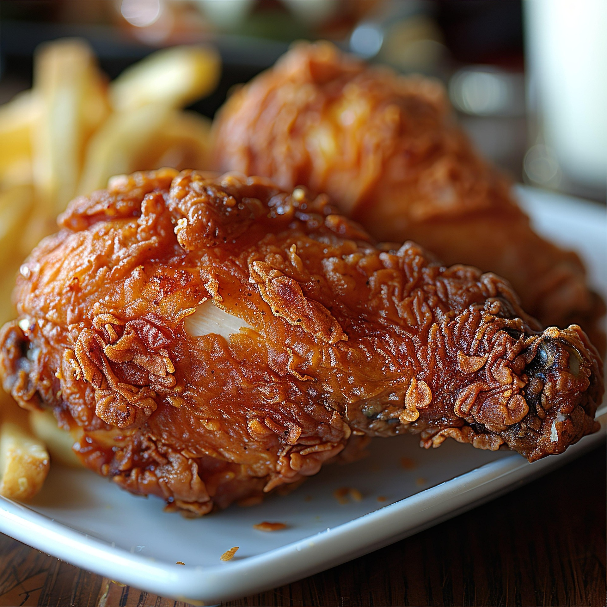

Garlic Chicken Fried Chicken
Back to Home

Description
This garlic chicken fried chicken recipe is a delicious twist on the classic fried chicken. The garlic adds a flavorful kick to the crispy coating, making it a perfect dish for any occasion.
Ingredients
- 2 teaspoons garlic powder
- 1 teaspoon ground black pepper
- 1 teaspoon salt
- 1 teaspoon paprika
- 1/2 cup seasoned bread crumbs
- 1 cup all-purpose flour
- 1/2 cup milk
- 1 large egg
- 4 boneless, skinless chicken breast halves - pounded thin
- Vegetable oil for frying
Instructions
- In a shallow dish, mix together the garlic powder, pepper, salt, paprika, bread crumbs and flour. In a separate dish, whisk together the milk and egg.
- Heat the oil in an electric skillet set to 350 degrees F (175 degrees C). Dip the chicken into the egg and milk, then dredge in the dry ingredients until evenly coated.
- Fry chicken in the hot oil for about 5 minutes per side, or until the chicken is cooked through and juices run clear. Remove from the oil with a slotted spatula, and serve.